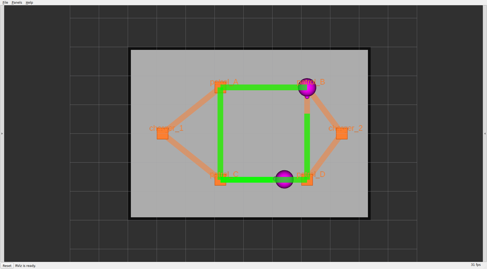
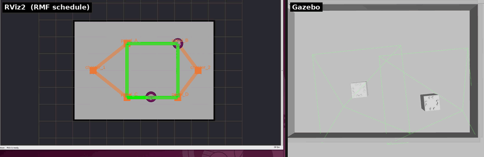
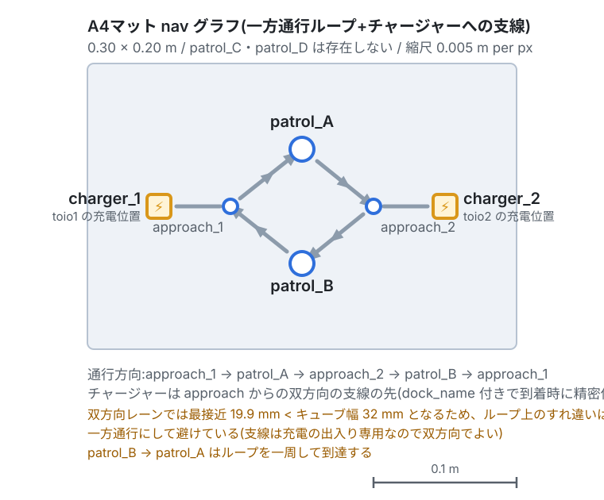

章6: 交通調停(traffic)
← 前章: 2台と入札 | 目次 | 次章: バッテリと自動充電 →
狙い
- フリート処理の核心その2 ── 2台が同じ道を使おうとしたとき、衝突せずに捌く仕組みを観察する
- RMFの交通調停が二層でできていることを理解する:
- 大域:
rmf_traffic_scheduleが経路を予約し、先に予約した側を通す - 局所: Nav2のpeer costmapが相手を障害物として避ける
- 狭いA4マットの一方通行設計が、なぜそうなっているかを知る
二層の交通調停
複数ロボットの衝突回避は、RMFでは役割の違う2つの層が担当する。
flowchart TB
global["大域（RMFコア）：rmf_traffic_schedule / rmf_traffic_blockade<br/>経路を時空間で予約 ── 「このレーンをこの時刻に使う」を<br/>フリート全体で調整し、譲り合いや順番待ちを決める"]
local["局所（Nav2）：peer_robot_costmap_publisher<br/>相手ロボットの現在位置をコストマップに障害物として<br/>描き込み、目の前の相手をその場で避ける"]
global -->|"決めた予定の上で"| local- 大域は「予定」の調整。誰がいつどのレーンを通るかを事前に予約し、かち合うなら先着を通して後発を待たせる。
- 局所は「現場」の回避。予定どおりでも近づきすぎたら、Nav2が相手をcostmap上で障害物として膨らませ、ぶつからないよう避ける。
この二層があるので、大域で順番を決めつつ、局所で詰めの安全を取る。peer costmapのフットプリント(相手をどれだけ大きく見るか)は mat に応じて自動設定される(A3=0.10 / A4=0.06)。
動かす・観察する
実験1: 2台を交差させる
2台に、互いの経路が交わるタスクを同時に投げてレーンを競合させる。別々の端末(または続けて)で:
# toio1 を charger_1 側 → charger_2 側へ
ros2 run rmf_demos_tasks dispatch_go_to_place -p charger_2 -F toio -R toio1 --use_sim_time
# toio2 を charger_2 側 → charger_1 側へ(すれ違いになる)
ros2 run rmf_demos_tasks dispatch_go_to_place -p charger_1 -F toio -R toio2 --use_sim_time
観察ポイント: - RVizで2本の経路帯(schedule)が引かれる。かち合う区間があると、片方が別レーンへ迂回するか、手前で待つ。これが大域調停。 - 接近時、Nav2側で相手を避けて膨らむ動き(局所回避)が見える。A3は格子で逃げ道があるので、たいてい別レーンへ回り込む。

2台に別々のタスクを投げた状態。2本の緑の経路帯(スケジュール予約)が格子を縫うように引かれ、競合区間で譲り合いが起きる。
2台が格子上を動きながらレーンを分け合う様子を2つのビューで並べたもの。左がRViz2(RMFスケジュール可視化 ── 2本の予約経路帯)、右がtoio_gazebo(実際のキューブのすれ違い)。競合区間では手前で待つ/別レーンへ回り込む挙動が見える。実験2: 待ちを /fleet_states で見る
大域調停の予約そのものは rmf_traffic_schedule_primary の内部にあるが、その結果はフリートの自己申告に現れる。2台を競合させたまま、状態の変化を覗く:
ros2 topic echo /fleet_states
一方は moving のまま進み、他方は待ちに入って位置が動かなくなる(手前で止まるか、極端に遅くなる)。「入札で誰がやるか」を決めた後、走行中は交通調停が順番を捌く ── 章5との役割の違いがここではっきりする。
実験3(任意): 狭いA4で一方通行を体感する
A4マットは狭く(0.30×0.20m)、双方向にすると2台が正面衝突しやすい。そこでnavグラフを時計回りの一方通行ループにしてある。端末Aを落として起動し直す:
ros2 launch toio_rmf_bringup toio_rmf.launch.py mat:=a4 run_sim:=true use_sim_time:=true

A3の双方向格子と違い、approach_1 → patrol_A → approach_2 → patrol_B → approach_1 の時計回り一方通行ループ。各チャージャーはapproachから伸びる双方向の支線の先にぶら下がる。矢印がレーンの向き。
A4の頂点は patrol_A / patrol_B / approach_1 / approach_2 + charger_1 / charger_2(patrol_C / patrol_D は無い)。patrolを投げると:
ros2 run rmf_demos_tasks dispatch_patrol -p patrol_A patrol_B -n 2 --use_sim_time
観察: patrol_B → patrol_A へ戻るとき、逆走せずループを一周して戻る。一方通行なので遠回りに見えるが、これが正常。狭い場所で正面衝突を構造的に避けるための設計。
A4での2台同時運用は物理限界に近い。頂点付近で同時に入れ替わると角が接触しうる。確実な非接触が要るならA3を使う。詳細はREADMEの「A4での2台同時運用の注意」を参照。
理解する
- 交通調停 ≠ 入札。入札(章5)は「誰がやるか」の意思決定、交通調停は「走り出した後の道の分け合い」。この2つが揃って初めてマルチロボットが成立する。
- 大域と局所は補い合う。大域だけだと現場の誤差でぶつかりうるし、局所だけだと膠着(お見合い)しやすい。RMFは大域で大枠の順番を決め、局所で最後の安全を取る。
- navグラフの設計は交通調停の効きを左右する。A3の格子は逃げ道が多く調停がラク、A4の一方通行は逃げ道を捨てる代わりに正面衝突を封じる。地図の作り方が渋滞の起きやすさを決める ── フリート運用の実務的な勘所。
- peer costmapのフットプリントを大きくしすぎると、狭いA4では通路を塞いでNav2がデッドロックする。だからマットごとに自動で加減している。詳細はREADMEの
peer_footprint_sizeを参照。
確認課題
- A3で2台を正面から向かわせ(実験1)、RVizでどちらが待ち・どちらが迂回したかを観察する。何度か繰り返し、毎回同じとは限らないことを見る。
- A4に切り替え、
patrol_B → patrol_Aが一方通行で一周して戻ることを確認する。A3の双方向と比べ、同じ2地点patrolでも走り方がまるで違う理由を説明できるか。 - (発展)A4で2台同時にタスクを投げ、頂点付近の掠りを観察する。物理的な狭さと調停の限界を体感したうえで、なぜ実機検証はA4で1台ずつが基本なのか(実機編の章13)を考える。
道の分け合いまで見たら、次はバッテリが尽きそうなとき勝手に充電へ帰る、フリートの自律的な自己管理を見る。
← 前章: 2台と入札 | 目次 | 次章: バッテリと自動充電 →